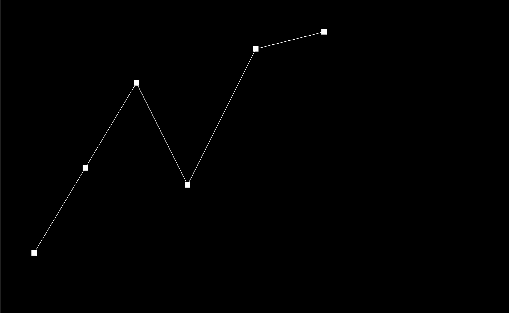
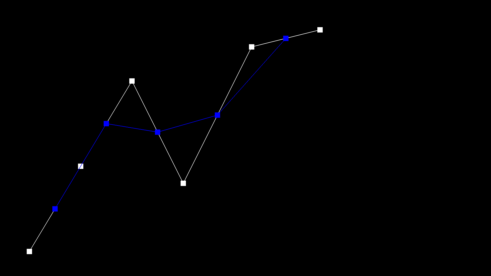
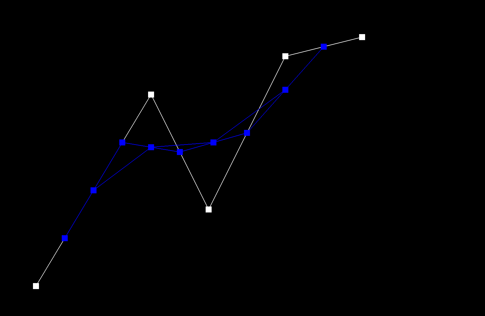
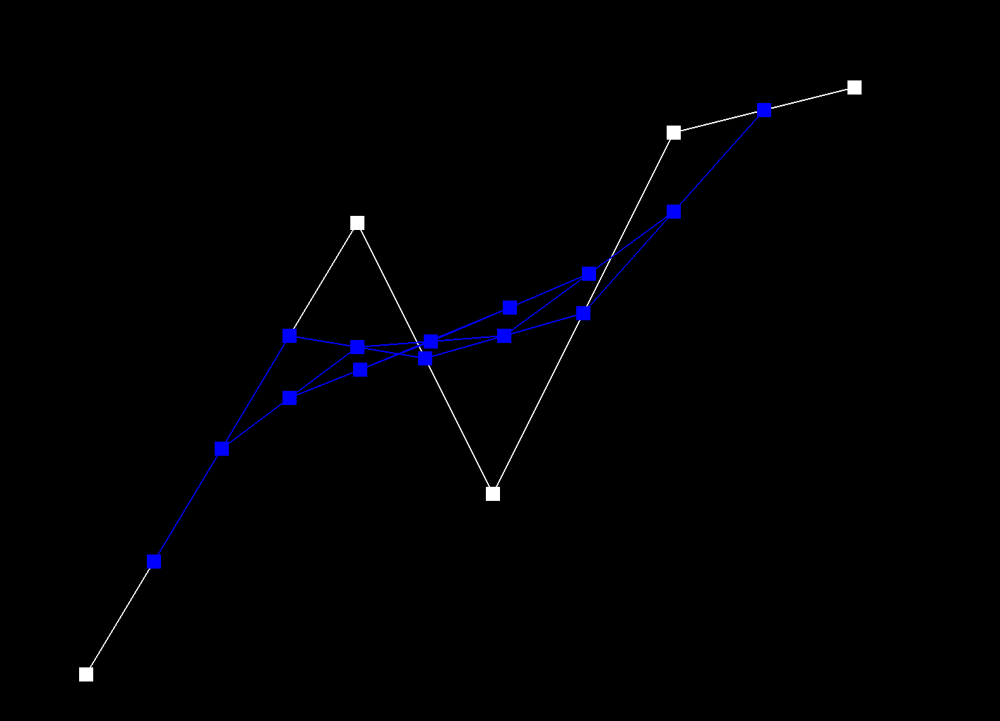
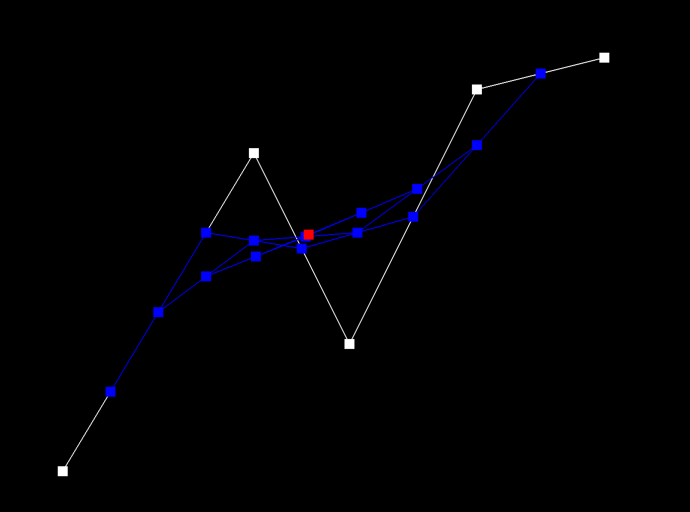
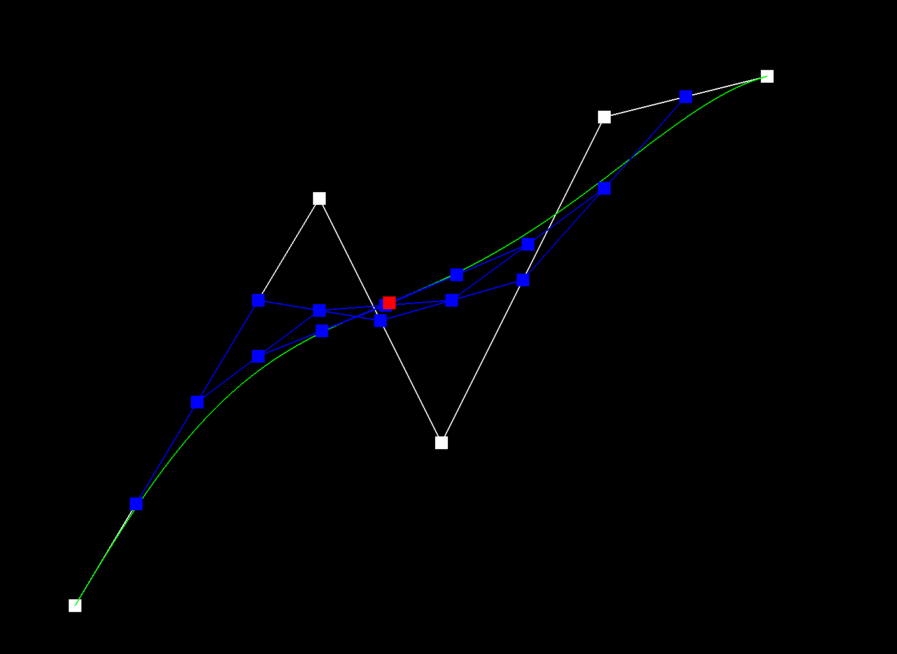
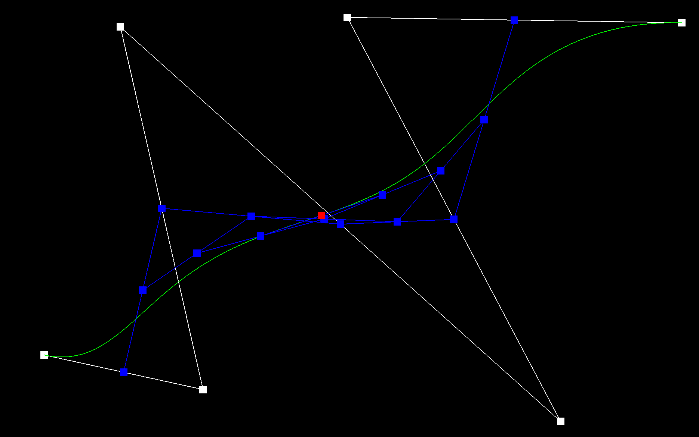

CS184/284A Spring 2025 Homework 2 Write-Up
Link to webpage:cal-cs184-student/hw-webpages-xay-writeup
Link to GitHub repository:cal-cs184-student/sp25-hw2-xhw2

Overview
Section I: Bezier Curves and Surfaces
Part 1: Bezier curves with 1D de Casteljau subdivision
In this part, I pretty much implemented the de Casteljau subdivision algorithm with the given formula. However, I encounter a problem with multiplication with Vector2D.h I fixed that by implementing the condition to check if the size of the point is less than 2 then return either 0 or 1 accordingly.
evaluateStep:
std::vector BezierCurve::evaluateStep(std::vector const &points)
{
// TODO Part 1.Bezier Curves
vector res;
// Check if input vector has at least 2 points
if (points.size() < 2) {
return points;
}
for (int i = 0; i < points.size() - 1; i++)
{
Vector2D pt1 = points[i];
Vector2D pt2 = points[i+1];
Vector2D pt = (1-t)*pt1 + t*pt2;
res.push_back(pt);
}
return res;
}
Below, I show the screenshots of each step / level of the evaluation from the original control points down to the final evaluated point + a screenshot of a slightly different Bezier curve.
|  |  |
|  |

|
|  |  |
|  |

t parameter |
Part 2: Bezier surfaces with separable 1D de Casteljau
For each row of control points in the grid, evaluate a Bezier curve at parameter u using the standard de Casteljau algorithm. This gives us n intermediate points. Then, take these n intermediate points and evaluate another Bezier curve at parameter v, again using the de Casteljau algorithm.
The implementation is quite similar to the previous part. So for this part, I follow the implementation from the previous part and use the de Casteljau algorithm to evaluate a Bezier surface. Then for BezierPatch::evaluate1D this is a recursive function for Casteljau's algorithm, it continues until there's only one point left. Then base case return the single point when the vector size is 1. Otherwise, it calls BezierPatch::evaluateStep and then recursively calls itself with the intermediate points. Finally, for BezierPatch::evaluate, it calls BezierPatch::evaluate1D with the correct number of control points to get the final Bezier surface.
evaluateStep:
// Perform one step of the de Casteljau algorithm
std::vector<Vector3D> evaluateStep(const std::vector<Vector3D>& points, double t) {
std::vector<Vector3D> res;
for (int i = 0; i < points.size() - 1; i++) {
Vector3D pt1 = points[i];
Vector3D pt2 = points[i+1];
Vector3D pt = (1-t)*pt1 + t*pt2;
res.push_back(pt);
}
return res;
}
evaluate1D:
// Recursive 1D de Casteljau algorithm
Vector3D evaluate1D(const std::vector<Vector3D>& points, double t) {
if (points.size() == 1) {
return points[0];
}
std::vector<Vector3D> inter = evaluateStep(points, t);
return evaluate1D(inter, t);
}
evaluate:
// Evaluate the entire Bezier surface at (u,v)
Vector3D evaluate(double u, double v) {
std::vector<Vector3D> curvePoints;
for (int i = 0; i < controlPoints.size(); i++) {
Vector3D point = evaluate1D(controlPoints[i], u);
curvePoints.push_back(point);
}
return evaluate1D(curvePoints, v);
}
Section II: Triangle Meshes and Half-Edge Data Structure
Part 3: Area-weighted vertex normals
For this part, I initalize the zero vector for each accumulated normaland create a loop that would iterated through the face, where I skip if it's a boundary face. Then I calculate the normal for each face and add it to the accumalted normal by using the cross() dot product *0.5 to get the area. Finally, I normalize the accumulated normal with area * the face area and assign it to the vertex.
Part 4: Edge flip
I first collected all necessary elements involved in the transformation. For example, the halfedges of the edge being flipped, the next halfedges in each face, the four vertices forming the two triangles, and the two faces sharing the edge. Before performing the flip, I checked if either face is a boundary loop, in which case the operation isn't allowed. The core of the implementation involves reassigning all pointers to reflect the new connectivity.
I used the setNeighbors() method to efficiently update all halfedge pointers (next, twin, vertex, edge, face) in a single call. I name the variable like he, heTwin, and heNext made the code more readable whihc is really when it comes to debugging the code and helped visualize the mesh structure during the operation.
From my previous commit, I found out that I've assigned the vertex to the new one, so with this implementaion I followed the requirement to only reassign pointers without adding or deleting any mesh elements, maintaining the exact same number of elements before and after the flip. By maintaining a consistent ordering when updating pointers, I make sure that the mesh remains valid and properly connected after the flip operation.
EdgeIter HalfedgeMesh::flipEdge( EdgeIter e0 )
{
// TODO Part 4.
// This method should flip the given edge and return an iterator to the flipped edge.
HalfedgeIter he = e0->halfedge();
HalfedgeIter heTwin = he->twin();
HalfedgeIter heNext = he->next();
HalfedgeIter heTwinNext = heTwin->next();
HalfedgeIter heNextNext = heNext->next();
HalfedgeIter heTwinNextNext = heTwinNext->next();
VertexIter vA = he->vertex();
VertexIter vB = heTwin->vertex();
VertexIter vC = heNextNext->vertex();
VertexIter vD = heTwinNextNext->vertex();
FaceIter faceA = he->face();
FaceIter faceB = heTwin->face();
if (faceA->isBoundary() || faceB->isBoundary()) {
return e0;
}
he->setNeighbors(heTwinNextNext, heTwin, vC, e0, faceA);
heNext->setNeighbors(he, heNext->twin(), vB, heNext->edge(), faceA);
heNextNext->setNeighbors(heTwinNext, heNextNext->twin(), vC, heNextNext->edge(), faceB);
heTwin->setNeighbors(heNextNext, he, vD, e0, faceB);
heTwinNext->setNeighbors(heTwin, heTwinNext->twin(), vA, heTwinNext->edge(), faceB);
heTwinNextNext->setNeighbors(heNext, heTwinNextNext->twin(), vD, heTwinNextNext->edge(), faceA);
faceA->halfedge() = he;
faceB->halfedge() = heTwin;
vA->halfedge() = heTwinNext;
vB->halfedge() = heNext;
vC->halfedge() = he;
vD->halfedge() = heTwin;
return e0;
}
Debugging Techniques I used:
- Geometric Visualization:
- Drawing diagrams helps track how connectivity changes
- Systematic Testing:
- Testing on simple meshes first (like a tetrahedron) before complex ones
- Verifying that mesh invariants are maintained after the flip

Part 5: Edge split
To make thing clear, I first gathered all the necessary mesh elements following the same implementaion strategy from the previous parts. Then I check if either of the face represents ab boundary loop.
next part is I create a new vertex at the midpont of the edge to be split by taking v0->position + v1->position / 2. Then I update the halfedge pointers for the new vertex and the faces connected to the edge by setting their halfedges to the new vertex.
The most important implementation detail is that I need to update the halfedge pointers for the new vertex and the faces connected to the edge by setting their halfedges to the new vertex.
Boundary Edge
For boundary edges, since it has only one adjacent face we would only need to split the interior face into two triangles. The boundary loop is preserved by inserting the new vertex into the boundary and connecting it appropriately. This requires creating four new halfedges, two new edges, and one new face.
Implementation Details for Boundary Edge:
if (e0->isBoundary()) {
HalfedgeIter hBoundary, innerH;
FaceIter fInterior;
if (h0->face()->isBoundary()) {
hBoundary = h0;
innerH = hTwin;
fInterior = hTwin->face();
} else {
hBoundary = hTwin;
innerH = h0;
fInterior = h0->face();
}
HalfedgeIter hNext = innerH->next();
HalfedgeIter hPrev = hNext->next();
VertexIter vOther = hPrev->vertex();
HalfedgeIter hNewA = newHalfedge();
HalfedgeIter hNewB = newHalfedge();
HalfedgeIter hNewC = newHalfedge();
HalfedgeIter hNewBoundary = newHalfedge();
EdgeIter eNewA = newEdge();
EdgeIter eNewB = newEdge();
FaceIter fNew = newFace();
// Set up the interior face connections
innerH->setNeighbors(hNewA, hNewBoundary, m, e0, fInterior);
hNext->setNeighbors(hNewB, hNext->twin(), innerH->twin()->vertex(), hNext->edge(), fNew);
hPrev->setNeighbors(innerH, hPrev->twin(), vOther, hPrev->edge(), fInterior);
hNewA->setNeighbors(hPrev, hNewB, vOther, eNewA, fInterior);
hNewB->setNeighbors(hNewC, hNewA, m, eNewA, fNew);
hNewC->setNeighbors(hNext, hBoundary, innerH->twin()->vertex(), eNewB, fNew);
hNewBoundary->setNeighbors(hBoundary->next(), innerH, m, e0, hBoundary->face());
hBoundary->setNeighbors(hNewBoundary, hNewC, hBoundary->vertex(), eNewB, hBoundary->face());
fInterior->halfedge() = innerH;
fNew->halfedge() = hNewB;
vStart->halfedge() = (vStart == innerH->vertex()) ? hNext : hBoundary;
vOther->halfedge() = hPrev;
vEnd->halfedge() = (vEnd == innerH->vertex()) ? hNext : hBoundary;
m->halfedge() = innerH;
e0->halfedge() = innerH;
eNewA->halfedge() = hNewB;
eNewB->halfedge() = hNewC;
} else {
HalfedgeIter h1 = h0;
HalfedgeIter t1 = hTwin;
HalfedgeIter h2 = h1->next();
HalfedgeIter t2 = t1->next();
HalfedgeIter h3 = h2->next();
HalfedgeIter t3 = t2->next();
VertexIter v0 = vStart;
VertexIter v2 = vEnd;
VertexIter v1 = h3->vertex();
VertexIter v3 = t3->vertex();
FaceIter f1 = h1->face();
FaceIter f2 = t1->face();
VertexIter v4 = m;
HalfedgeIter h4 = newHalfedge();
HalfedgeIter h5 = newHalfedge();
HalfedgeIter h6 = newHalfedge();
HalfedgeIter t4 = newHalfedge();
HalfedgeIter t5 = newHalfedge();
HalfedgeIter t6 = newHalfedge();
EdgeIter e1 = newEdge();
EdgeIter e2 = newEdge();
EdgeIter e3 = newEdge();
FaceIter f3 = newFace();
FaceIter f4 = newFace();
h1->setNeighbors(h4, t6, v0, e0, f1);
h2->setNeighbors(h5, h2->twin(), v2, h2->edge(), f3);
h3->setNeighbors(h1, h3->twin(), v1, h3->edge(), f1);
h4->setNeighbors(h3, h5, v4, e1, f1);
h5->setNeighbors(h6, h4, v1, e1, f3);
h6->setNeighbors(h2, t1, v4, e2, f3);
t1->setNeighbors(t4, h6, v2, e2, f2);
t2->setNeighbors(t5, t2->twin(), v0, t2->edge(), f4);
t3->setNeighbors(t1, t3->twin(), v3, t3->edge(), f2);
t4->setNeighbors(t3, t5, v4, e3, f2);
t5->setNeighbors(t6, t4, v3, e3, f4);
t6->setNeighbors(t2, h1, v4, e0, f4);
f1->halfedge() = h1;
f2->halfedge() = t1;
f3->halfedge() = h5;
f4->halfedge() = t5;
v0->halfedge() = t2;
v1->halfedge() = h3;
v2->halfedge() = h2;
v3->halfedge() = t3;
v4->halfedge() = h6;
e0->halfedge() = h1;
e1->halfedge() = h5;
e2->halfedge() = t1;
e3->halfedge() = t5;
}
Debugging Details:
I had to carefully think about the topology of the mesh and how the halfedge data structure represents boundary edges. The key challenge was understanding how to maintain the boundary loop while splitting the edge. Some of the challenges I faced, is ensuring that all halfedges are properly connected in a cycle around each face, including the boundary face. I also making sure that each edge and vertex points to the correct halfedge after the split operation.


Debugging:
Compare to the previous part, I implemented this function like the way I would draw it out in paper and make the code follow that way which would be it easier to debug and for each step I would log out the current value on each line to make sure I'm on the right track
Part 6: Loop subdivision for mesh upsampling
In this part, I implemented the loop subdivision by following a five-step approach mentioned in the code. First, I computed new positions for all existing vertices using the Loop subdivision rule, where each vertex's new position is a weighted average of its original position and its neighbors' positions.
Then I calculated new poistions for edge midpointsm using a weighted average of the the edge endpoints and opposite vertices. For each edge I used the formula 3/8 * (A + B) + 1/8 * (C + D) to determine where the new vertex should be place.
After that, I collected all original edges into a vector to avoid iterating over newly created edges, then split each original edge using the splitEdge function. During this process, I marked new vertices and edges appropriately to distinguish between original and new elements. Fourth, I flipped any new edge that connected an old vertex with a new vertex, which is crucial for achieving the proper subdivision pattern.
During debugging, I found it helpful to visualize the mesh after each step, which revealed issues with edge marking and boundary handling. A key insight was ensuring proper handling of the isNew flag to correctly identify which edges to flip. I also discovered that collecting all original edges before splitting was essential to prevent infinite loops.


The observation on mesh according to the picture above, I see that loop subdivision has a notable smoothing effect on meshes. Where sharp corners and edges become progressively rounded with each subdivision iteration. This happend because the subdivision scheme inherently averages vertex positions with their neighbors, causing sharp features to be blended with surrounding geometry. Another interesting observation is that Loop subdivision preserves the overall shape and volume of the mesh while increasing its smoothness. However, this can sometimes lead to shrinkage in certain areas, particularly in regions with high curvature. This effect becomes more pronounced with multiple subdivision iterations. When it comes to reduce the pre-splitting edges in area some edges, by adding more vertices along sharp edges before applying subdivision, this create a higher density of vertices that better preserve the original shape. This works because the subdivision algorithm has more points to work with, allowing it to maintain a closer approximation to the original sharp feature.
Cube:


When I apply Loop subdivision to a cube model, I notice an interesting asymmetry occur after multiple iterations. This happens because the initial triangulation of the cube isn’t symmetric. Each face of the cube is usually divided into two triangles by a diagonal edge, but these diagonals don’t follow a consistent pattern across all faces. As Loop subdivision creates new vertices at edge midpoints and connects them based on the existing topology, this asymmetric edge structure gets amplified with each iteration. I can pre-process the cube with strategic edge flips and splits. One effective approach is to first split each face into four triangles by adding a vertex at the center and connecting it to the four corners. This creates a more symmetric initial triangulation. I can also split edges along the cube’s original edges to increase the density of vertices in these regions, which helps preserve the cube’s sharp features during subdivision. With a symmetric starting point, loop subdivision applies its smoothing operations more uniformly across the entire model. This adding the vertices along the cube’s edges also helps maintain sharpness during subdivision by providing more points for the algorithm to work with. As a result, the cube retains its important geometric features while achieving a smoother, more consistent subdivision.